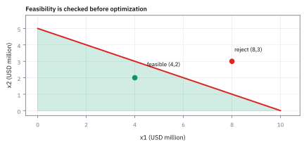
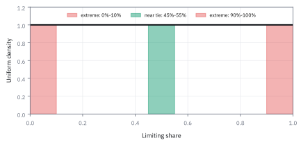

4.4 Polya's Urn and Share Martingales
mean share คงที่ แต่ reinforcement ทำให้ปลายทางกระจายได้ทั่วช่วง
โหลมีลูกแดง 1 ลูกและเขียว 1 ลูก ทุกครั้งหยิบหนึ่งลูก ใส่คืน แล้วเติมลูกสีเดียวกันอีก 1 ลูก หยิบครบ 100 ครั้ง โอกาสที่สัดส่วนลูกแดงจบในช่วง 45% ถึง 55% คือเท่าไร เทียบกับโยนเหรียญ 100 ครั้งแล้วนับสัดส่วนหัว?
เฉลย: โหลได้แค่ 10.9% ส่วนเหรียญได้ 72.9% ทั้งที่ค่าเฉลี่ยของทั้งสองอยู่ที่ 50% เท่ากัน ในโหล จำนวนแดงทุกค่าตั้งแต่ 0 ถึง 100 ครั้งมีโอกาสเท่ากันหมด คือ 1 ใน 101 และมีแค่ 11 ค่าที่ตกในช่วงนั้น
สีที่นำก่อนมีโอกาสถูกหยิบมากขึ้น จึงได้ลูกเพิ่มอีก สัดส่วนของโหลเป็น martingale แต่ค่าเฉลี่ยที่นิ่งไม่ได้ดึงผลลัพธ์เข้าหาตรงกลางเลย
เริ่มจากค่าเฉลี่ยที่นิ่ง แต่ผลลัพธ์ที่ไม่ยอมเข้าหากลาง
หัวข้อ 4.1 ถึง 4.3 ใช้เกมเหรียญเป็นตัวอย่างของ martingale ตลอด และเกมเหรียญมีนิสัยที่ทำให้เข้าใจผิดได้ง่าย คือผลลัพธ์ของมันกองอยู่กลาง ๆ โยน 100 ครั้ง สัดส่วนหัวจบใกล้ 50% เกือบทุกครั้ง
ทีนี้ลองเกมอื่นที่ยังเป็น martingale เหมือนกัน คือโหลที่มีลูกแดงหนึ่งเขียวหนึ่ง หยิบมาหนึ่งลูก ใส่คืน แล้วเติมลูกสีเดียวกันเข้าไปอีกหนึ่ง ทำ 100 ครั้ง สัดส่วนแดงยังเฉลี่ย 50% เท่าเดิม
แต่โอกาสที่มันจะจบในช่วง 45% ถึง 55% มีแค่ 10.9% เทียบกับเหรียญที่ได้ 72.9% ทุกสัดส่วนตั้งแต่ 0 ถึง 100% มีโอกาสเท่ากันหมด หัวข้อนี้แสดงว่าค่าเฉลี่ยที่นิ่งไม่ได้แปลว่าผลลัพธ์จะเข้าหากลาง ซึ่งเป็นความเข้าใจผิดที่แพงที่สุดข้อหนึ่งในการจัดการความเสี่ยง
ศัพท์ที่ใช้ในหัวข้อนี้
- Polya's urn
- โหลที่หยิบลูกหนึ่งแล้วใส่คืนพร้อมเติมลูกสีเดิม ใช้จำลองระบบที่ผลเดิมเพิ่มโอกาสของผลเดิมในอนาคต
- reinforcement
- กลไกที่การถูกเลือกครั้งหนึ่งเพิ่มโอกาสถูกเลือกครั้งต่อไป ใช้แทนวงจรป้อนกลับของสภาพคล่อง ความนิยม หรือจำนวนผู้ใช้
- path dependence
- สมบัติที่ผลในอนาคตขึ้นกับลำดับเหตุการณ์ที่ผ่านมา ใช้แยกระบบที่เสริมแรงตัวเองออกจากการสุ่มที่ไม่เกี่ยวกัน
- exchangeability
- สมบัติที่โอกาสของลำดับหนึ่งขึ้นกับว่าได้แต่ละสีกี่ครั้ง ไม่ขึ้นกับว่าได้ตอนไหน ใช้รวมลำดับที่มีจำนวนแดงเท่ากันเข้าด้วยกัน
- trading venue
- ตลาดหรือระบบที่รับคำสั่งซื้อขาย เช่นตลาดหลักทรัพย์หรือระบบจับคู่ของโบรกเกอร์ ใช้เป็นผู้เล่นที่แข่งกันแย่งคำสั่งซื้อขาย
- market share
- สัดส่วนของกิจกรรมทั้งหมดที่ venue หนึ่งได้ ใช้วัดตำแหน่งการแข่งขันโดยไม่ปนกับการโตของตลาดรวม
- liquidity
- ความสามารถซื้อขายปริมาณหนึ่งโดยไม่ขยับราคามาก ใช้อธิบายว่าทำไมคำสั่งซื้อขายไหลไปหา venue ที่ลึกกว่า
- order flow
- ลำดับคำสั่งซื้อขายที่เข้าตลาด ใช้เป็นลูกบอลแต่ละลูกที่เติมลงโหลของ venue
- spread
- ช่องว่างระหว่างราคาเสนอซื้อสูงสุดกับราคาเสนอขายต่ำสุด ใช้วัดต้นทุนทันทีของการซื้อขาย มักแคบลงเมื่อสภาพคล่องสูง
- density
- ความสูงของเส้นโอกาสต่อหน่วยความกว้าง พื้นที่ใต้เส้นในช่วงหนึ่งคือโอกาสของช่วงนั้น ใช้หาโอกาสของสัดส่วนสุดท้ายด้วย integral
- martingale convergence theorem
- ผลที่ว่า martingale ที่หนีออกนอกช่วงจำกัดไม่ได้ ต้องนิ่งที่ค่าหนึ่งในที่สุดเกือบทุกเส้นทาง ใช้บอกว่าสัดส่วนของโหลลงเอยที่ค่าหนึ่งจริง
- Beta distribution
- รูปแบบความน่าจะเป็นบนช่วง 0 ถึง 1 ที่รูปร่างกำหนดด้วยตัวเลขสองตัว ใช้บอกว่าสัดส่วนสุดท้ายของโหลกระจายอย่างไรตามลูกตั้งต้น
- law of large numbers
- ผลที่ค่าเฉลี่ยของการสุ่มที่ไม่เกี่ยวกันเข้าใกล้ค่าเฉลี่ยจริง ใช้กับการโยนเหรียญ แต่ใช้ตรง ๆ ไม่ได้เมื่อการหยิบเสริมแรงกัน
- Central Limit Theorem (CLT)
- ผลที่ผลรวมของการสุ่มอิสระจำนวนมากมีรูปร่างเข้าใกล้ระฆัง ใช้ประมาณโอกาสของสัดส่วนหัวในการโยนเหรียญ (หัวข้อ 1.9)
- Cumulative Distribution Function (CDF)
- โอกาสสะสมที่ค่าจะไม่เกินจุดหนึ่ง ใช้หารูปร่างของสัดส่วนสุดท้าย
- execution desk
- ทีมที่ส่งคำสั่งซื้อขายของลูกค้าไปยัง venue ต่าง ๆ ใช้เป็นผู้ถามว่าจะลงทุนดึงคำสั่งซื้อขายเข้า venue ใหม่หรือไม่
- launch credit
- ส่วนลดหรือเงินคืนที่ venue ใหม่จ่ายเพื่อดึงคำสั่งซื้อขายช่วงเปิดตัว ใช้เป็นงบที่ต้องตัดสินใจ
- winner-take-most
- ผลที่ฝ่ายหนึ่งได้ส่วนแบ่งเกือบทั้งหมดแต่ไม่ทั้งหมด ใช้เรียกปลายทางสุดขอบของโหล
สัญลักษณ์ที่ใช้ในหัวข้อนี้
| สัญลักษณ์ | ความหมาย | หน่วย |
|---|---|---|
| $a$, $b$ | จำนวนลูกแดงและเขียวตั้งต้น | ลูก |
| $n$ | จำนวนครั้งที่หยิบไปแล้ว | ครั้ง |
| $R_n$ | จำนวนลูกแดงในโหลหลังหยิบ $n$ ครั้ง | ลูก |
| $J_n$ | จำนวนครั้งที่หยิบได้แดงใน $n$ ครั้ง | ครั้ง |
| $M_n$ | สัดส่วนลูกแดงหลังหยิบ $n$ ครั้ง | สัดส่วน |
| $\mathbb E_n[\cdot]$ | ค่าเฉลี่ยเมื่อรู้สีที่หยิบได้ทุกครั้งจนถึงครั้งที่ $n$ (หัวข้อ 4.1) | หน่วยของตัวข้างใน |
| $M_\infty$ | สัดส่วนที่โหลนิ่งอยู่เมื่อหยิบไปเรื่อย ๆ ไม่สิ้นสุด ซึ่งต่างกันในแต่ละเส้นทาง | สัดส่วน |
| $\widehat p_n$ | สัดส่วนหัวจากการโยนเหรียญเที่ยงตรง $n$ ครั้ง | สัดส่วน |
| $x$ | ระดับสัดส่วนที่ใช้ทดสอบ อยู่ระหว่าง 0 กับ 1 | สัดส่วน |
ขั้นที่ 1 — กติกาเป็นตัวเลข: ตัวส่วนโตขึ้นทุกครั้ง
เริ่มด้วยแดง 1 เขียว 1 หยิบแล้วใส่คืนพร้อมเติมสีเดิมอีกลูก หลังหยิบ n ครั้งจึงมีลูกทั้งหมด n + 2 ลูก ทุกลูกมีสิทธิ์ถูกหยิบเท่ากัน
โอกาสได้แดงคือจำนวนลูกแดงหารลูกทั้งหมด ได้แดงแล้วแดงเพิ่มหนึ่งลูก ได้เขียวแล้วแดงเท่าเดิม ครั้งแรกโอกาสครึ่งต่อครึ่ง แต่ถ้าครั้งแรกได้แดง โหลกลายเป็นแดง 2 เขียว 1 และโอกาสแดงครั้งที่สองขึ้นเป็นสองในสาม
ขั้นที่ 2 — สองครั้งแรกด้วยมือ: ทุกจำนวนแดงมีโอกาสเท่ากัน
ก่อนสูตรใด ๆ ลองนับสองครั้งแรก มีสี่ลำดับที่เป็นไปได้ คูณโอกาสตามทางแล้วรวมตามจำนวนแดง จากนั้นหาค่าเฉลี่ยของสัดส่วน
แดงแล้วเขียวกับเขียวแล้วแดงได้โอกาสเท่ากันพอดี ทั้งที่ลำดับต่างกัน โอกาสขึ้นกับว่าได้แดงกี่ครั้ง ไม่ใช่ได้ตอนไหน ตำราเรียกสมบัตินี้ว่า exchangeability
ผลคือแดง 0, 1, 2 ครั้งมีโอกาสหนึ่งในสามเท่ากัน ไม่ได้กระจุกที่ 1 แบบเหรียญ แต่ค่าเฉลี่ยของสัดส่วนยังเป็นครึ่งหนึ่งพอดี สองข้อนี้คือเรื่องทั้งหมดของหัวข้อ
Figure 4.4a — urn ที่เสริมแรงกระจายผลลัพธ์เท่ากันทุกสัดส่วน

ซ้าย: เริ่ม 1 แดง 1 เขียว หยิบแล้วใส่คืนพร้อมลูกสีเดียวกันเพิ่มหนึ่งลูก หลัง 2 ครั้ง สถานะ 1:3, 2:2 และ 3:1 มีโอกาส 1/3 เท่ากัน ขณะที่เหรียญยุติธรรมให้ 1/4, 1/2, 1/4 ขวา: หลัง 10 ครั้ง urn ให้จำนวนแดง 0 ถึง 10 โอกาส 1/11 เท่ากันทุกค่า ส่วนเหรียญกระจุกที่ 5 ถึง 24.6% การเสริมแรงยกน้ำหนักให้สถานะสุดขอบ
ขั้นที่ 3 — จำนวนลูกแดงเอียงขึ้นเสมอ จึงวัดผิดสิ่ง
ถ่วงสองกรณีของขั้นที่ 1 ด้วยโอกาสแล้วรวมกัน จำนวนลูกแดงลดไม่ได้ และเพิ่มได้ทุกครั้ง จึงไม่ใช่ martingale
พจน์ที่มีกำลังสองโผล่สองครั้งด้วยเครื่องหมายตรงข้าม จึงหักกันทิ้ง ที่เหลือดึงตัวร่วมได้ตัวคูณที่มากกว่า 1 เสมอ ตัวอย่างสองบรรทัดล่างนับตรงได้ 8/3 ตรงกับสูตร จำนวนแดงโตเพราะทั้งโหลโต ไม่ใช่เพราะแดงได้เปรียบ
ขั้นที่ 4 — นิยามของสัดส่วน: หารด้วยขนาดโหล
บรรทัดนี้เป็นนิยาม ไม่ใช่ผลที่พิสูจน์ จำนวนแดงโตก็จริง แต่ลูกทั้งหมดก็โตตาม สิ่งที่ควรจับตาจึงเป็นสัดส่วน
สัดส่วนแดงคือจำนวนแดงหารลูกทั้งหมด ตอนเริ่มเท่ากับ 1/2 และอยู่ระหว่าง 0 กับ 1 เสมอ ขั้นถัดไปตรวจว่ามันเป็น martingale
ขั้นที่ 5 — พิสูจน์ว่าสัดส่วนเป็น martingale
แทนผลของขั้นที่ 3 ลงไป ตัวส่วนของครั้งถัดไปคือ n + 3 ซึ่งรู้ล่วงหน้า ไม่สุ่ม จึงดึงออกนอกค่าเฉลี่ยได้
n + 3 อยู่ทั้งบนและล่างจึงตัดกันพอดี ตัวคูณที่ทำให้จำนวนแดงเอียงขึ้นหายไปกับตัวส่วนที่โตเท่ากัน สองบรรทัดล่างตรวจด้วยเลข หลังได้แดงครั้งแรก สัดส่วน 2/3 และค่าเฉลี่ยของครั้งถัดไปก็ยัง 2/3
ขั้นที่ 6 — ใช้สัดส่วนทำนายจำนวนแดงข้างหน้า
หยิบไป 100 ครั้งมีลูกแดง 70 ลูก ค่าเฉลี่ยของจำนวนลูกแดงหลังหยิบครบ 200 ครั้งคือเท่าไร ไม่ต้องรู้ว่าระหว่างทางเกิดอะไร
กับดักคือตอบ 70 เพราะจำว่า martingale แปลว่าไม่ขยับ แต่สิ่งที่ไม่ขยับคือสัดส่วน วิธีที่ถูกคือแปลงเป็นสัดหารด้วยตัวส่วนตอนนี้ 102 ปล่อยให้นิ่ง แล้วแปลงกลับด้วยตัวส่วนตอนนั้น 202
ตรวจเอง: 138.63 หาร 202 ได้ 0.6863 เท่ากับ 70 หาร 102 โหลโตอีก 100 ลูก จำนวนแดงจึงเกือบเป็นสองเท่า
Figure 4.4b — สัดส่วนนิ่งลง แต่ไม่ได้นิ่งที่ครึ่งหนึ่ง

ทุกเส้นทางเริ่มที่ 0.50 แล้วค่อย ๆ นิ่งที่คนละระดับ ค่าเฉลี่ยข้ามเส้นทางยังใกล้ 0.50 แต่เส้นทางเดี่ยวไม่ได้ถูกดึงกลับสู่กลาง
ขั้นที่ 7 — โอกาสของลำดับหนึ่งลำดับขึ้นกับจำนวนแดงเท่านั้น
ขยายการนับของขั้นที่ 2 ไปที่ n ครั้ง ลำดับหนึ่งที่ได้แดง j ครั้งคือการคูณโอกาสทีละครั้งตามขั้นที่ 1 แยกดูตัวส่วนกับตัวเศษ
โหลโตทีละลูกทุกครั้งไม่ว่าได้สีอะไร ตัวส่วนจึงวิ่ง 2, 3 ไปจนถึง n + 1 เสมอ ครั้งที่ได้แดง ตัวเศษคือจำนวนแดงตอนนั้น ซึ่งเริ่มที่ 1 แล้วโตทีละหนึ่ง ฝั่งเขียวก็เช่นกัน
ลำดับที่แดงกับเขียวสลับกันไม่มีผล เพราะตัวเลขชุดเดิมถูกคูณครบเหมือนกันหมด บรรทัดล่างตรงกับแดงสองครั้งของขั้นที่ 2
ขั้นที่ 8 — รวมทุกลำดับ: ทุกจำนวนแดงมีโอกาส 1 ใน n + 1
ลำดับที่ได้แดงเท่ากันมีโอกาสเท่ากันและไม่ทับกัน จึงนับจำนวนลำดับด้วยการเลือกตำแหน่งแบบหัวข้อ 1.5 แล้วคูณ
กางแฟกทอเรียลออก j! และ (n − j)! อยู่ทั้งบนและล่างจึงตัดกันหมด ผลที่ได้ไม่มี j อยู่เลย ทุกจำนวนแดงจึงมีโอกาสเท่ากัน ซึ่งขัดกับสัญชาตญาณของคนที่ชินกับเหรียญ การเติมลูกสีเดิมคือสิ่งที่ทำให้ตัดกันพอดี
ขั้นที่ 9 — สัดส่วนที่เป็นไปได้หลัง n ครั้ง
แปลงจำนวนครั้งที่ได้แดงเป็นสัดส่วน ลูกแดงทั้งหมดคือหนึ่งลูกตั้งต้นบวกลูกที่เติมทุกครั้งที่ได้แดง
ได้แดงศูนย์ครั้งให้สัดส่วนต่ำสุด ได้แดงทุกครั้งให้สูงสุด ค่าที่เป็นไปได้เรียงห่างเท่ากัน และขั้นที่ 8 บอกว่าทุกค่ามีน้ำหนักเท่ากัน พอหยิบมากขึ้น จุดเหล่านี้ถี่ขึ้นจนเรียบเสมอทั้งช่วง
ขั้นที่ 10 — ตอบคำถามเปิด: 100 ครั้ง ช่วง 45% ถึง 55%
นับว่าจำนวนแดงค่าไหนให้สัดส่วนในช่วงนั้น แล้วเทียบกับเหรียญ 100 ครั้งที่ใช้ระฆังของหัวข้อ 1.9 พร้อมปรับครึ่งหน่วยเพราะนับเป็นจำนวนเต็ม
จำนวนแดงที่ใช้ได้มี 11 ค่าจาก 101 ค่าที่โอกาสเท่ากัน ส่วนเหรียญกระจุกรอบ 50 หัว ความผันผวนแค่ 5 หัว ช่วงนี้จึงกินพื้นที่เกือบสามในสี่ ค่าเฉลี่ยเท่ากันแต่ความกว้างต่างกันลิบลับ
ขั้นที่ 11 — ความกว้างของสัดส่วนหลัง n ครั้ง: กว้างขึ้น ไม่ได้แคบลง
จำนวนครั้งที่ได้แดงมีโอกาสเท่ากันทุกค่าตั้งแต่ 0 ถึง n หาค่าเฉลี่ยของกำลังสองด้วยผลรวมกำลังสอง แล้วแปลงเป็นสัดส่วน
ผลรวมกำลังสองตรวจได้เร็ว ที่ n = 2 ได้ 0 + 1 + 4 = 5 ตรงกับ 2·3·5/6 สัดส่วนมีตัวส่วน n + 2 จึงหาร variance ด้วยกำลังสองของมัน
ที่ n = 2 ตรวจกับขั้นที่ 2 ได้ สัดส่วน 3/4, 1/2, 1/4 อย่างละหนึ่งในสาม variance เท่ากับ 1/24 ตรงกัน ความผันผวนโตจาก 16.67% ไปเกือบ 28.85% ตรงข้ามกับเหรียญที่หดเข้าหาศูนย์
ขั้นที่ 12 — สัดส่วนสุดท้ายกระจายเท่ากันทั้งช่วง 0 ถึง 1
สัดส่วนอยู่ระหว่าง 0 กับ 1 เสมอ martingale convergence theorem จึงบอกว่าแต่ละเส้นทางนิ่งที่ค่าหนึ่ง คำถามคือค่านั้นกระจายอย่างไร หาโอกาสสะสมตรง ๆ จากขั้นที่ 8 โดยนับจำนวนค่าที่ไม่เกินระดับ x
ย้ายข้างให้เหลือเงื่อนไขบนจำนวนแดง จำนวนค่าที่ใช้ได้คือ x(n+2) ปัดลงเป็นจำนวนเต็ม แต่ละค่ามีน้ำหนัก 1 ใน n + 1
ปัดลงคลาดไม่เกินหนึ่งหน่วย และ n + 2 กับ n + 1 เข้าใกล้กันเมื่อ n โต จึงได้โอกาสสะสมเท่ากับ x พอดี เส้นตรงแบบนี้คือการกระจายเท่ากันทั้งช่วง
ขั้นที่ 13 — ค่าเฉลี่ยและความกว้างของสัดส่วนสุดท้าย
density เท่ากับ 1 ตลอดช่วง ค่าเฉลี่ยและค่าเฉลี่ยของกำลังสองจึงหาได้ด้วย integral สั้น ๆ
ค่าเฉลี่ยยังเป็นครึ่งหนึ่งตามที่ martingale บังคับ แต่ความผันผวนเกือบ 29 จุด ขั้นที่ 11 เข้าใกล้ตัวเลขนี้จากด้านล่าง: 0.288531 ที่ 2,000 ครั้ง
Figure 4.4c — การเสริมแรง เทียบกับการสุ่มแบบอิสระ

ที่ 30 ครั้ง สัดส่วนของโหลให้น้ำหนักเท่ากันแทบทั่วช่วง ขณะที่เหรียญที่ไม่เกี่ยวกันกระจุกใกล้ 0.50 ค่าเฉลี่ยเดียวกันจึงซ่อนการกระจายคนละโลก
ขั้นที่ 14 — โอกาสของช่วงเท่ากับความกว้างของช่วง
เมื่อ density เท่ากับ 1 ตลอด โอกาสที่สัดส่วนสุดท้ายตกในช่วงใดคือความกว้างของช่วงนั้นเอง desk ถามสองช่วง คือใกล้เสมอ และมีผู้ชนะขาด
ช่วงใกล้เสมอกว้าง 0.10 ได้ 10% ช่วงสุดขอบสองด้านรวมกว้าง 0.20 ได้ 20% การมีผู้ชนะขาดจึงเกิดบ่อยเป็นสองเท่าของการจบแบบใกล้เสมอ
ขั้นที่ 15 — เทียบกับเหรียญ 2,000 ครั้ง
ถ้าคิดว่าคำสั่งซื้อขายแต่ละรายไม่เกี่ยวกัน จะได้ภาพเหรียญ ความผันผวนของสัดส่วนหัวหดตามรากที่สองของจำนวนครั้ง
ช่วง 45% ถึง 55% ห่างจากกลาง 4.47 เท่าของความผันผวน ระฆังให้โอกาสเกิน 99.99% ภาพเหรียญบอกว่าเสมอแน่นอน ภาพโหลบอกว่าเสมอแค่ 10% คนละคำตอบเพราะสมมติฐานเรื่องความเกี่ยวกันต่างกัน
Figure 4.4d — โอกาสปลายทางคือความกว้างของช่วง

ช่วงใกล้เสมอ 45%–55% มีโอกาส 10% แต่ช่วงที่ฝ่ายหนึ่งได้อย่างน้อย 90% หรือไม่เกิน 10% รวมกันมี 20% ช่วงสุดขอบจึงเป็น 2 เท่าของช่วงใกล้เสมอ
ขั้นที่ 16 — โหลเริ่มด้วย a แดง b เขียว: นับแบบเดิม
ใช้วิธีของขั้นที่ 7 กับโหลที่เริ่มด้วยลูกมากขึ้น ตัวส่วนเริ่มที่ a + b ตัวเศษฝั่งแดงเริ่มที่ a ฝั่งเขียวเริ่มที่ b แล้วคูณจำนวนลำดับเข้าไป
ผลคูณของตัวเลขเรียงกันเขียนเป็นแฟกทอเรียลหารกันได้ เพราะ a และ b เป็นจำนวนลูกจึงเป็นจำนวนเต็ม แทน a = b = 1 กลับไปได้ผลของขั้นที่ 8 พอดี
ขั้นที่ 17 — รูปร่างของสัดส่วนสุดท้าย: Beta distribution
เมื่อหยิบมาก ๆ ผลคูณเรียงกันยาวประมาณด้วยกำลังได้ นี่คือที่มาของรูปร่าง แล้วตัวคงที่ด้านหน้าทำให้พื้นที่ใต้เส้นเท่ากับหนึ่ง
ผลคูณ a − 1 ตัวที่แต่ละตัวใกล้ j มีค่าราว $j^{a-1}$ เมื่อ j ใหญ่ ฝั่งเขียวก็เช่นกัน รวมกับตัวส่วนที่ไม่ขึ้นกับ j ได้รูปร่างของ Beta distribution
โหลแดง 1 เขียว 1 ได้ density เท่ากับ 1 ทั้งช่วง ตรงกับขั้นที่ 12 ที่ได้มาอีกทาง
ขั้นที่ 18 — โหลเริ่ม 10 ต่อ 10: ประวัติหนาทำให้สุดขอบแทบเป็นไปไม่ได้
ลูกตั้งต้นทำหน้าที่เหมือนความเฉื่อย โหลที่เริ่มด้วยลูกเยอะ ความบังเอิญช่วงแรกเหวี่ยงสัดส่วนไปสุดขอบไม่ได้ง่าย ลองแทน a = b = 10 ในสูตรของขั้นที่ 17
density ตรงกลางสูงกว่าที่ 10% เกือบหมื่นเท่า รูปกราฟจึงโป่งกลางแทนที่จะราบ ตรวจด้วย Python stats.beta(10, 10) ได้โอกาสช่วง 45%–55% เท่ากับ 34.2% และช่วงสุดขอบรวมแค่ 0.0008%
ส่วนโหล 1 ต่อ 1 ไม่มีความเฉื่อยเลย ความบังเอิญครั้งเดียวจึงมีพลังมาก venue ใหม่ที่ยังไม่มีประวัติจึงเหมือนโหล 1 ต่อ 1
คำตอบของ execution desk
โจทย์ให้อะไรมาบ้าง: venue ใหม่ A กับ venue เดิม B เริ่มเท่ากัน คำสั่งซื้อขายไหลไปทางที่ลึกกว่าแบบโหล 1 ต่อ 1 desk ต้องตัดสินงบ launch credit \$2,000,000
คำตอบ: ค่าเฉลี่ยของส่วนแบ่งสุดท้ายของ A คือ 50% แต่โอกาสจบในช่วง 45%–55% มีเพียง 10% ขณะที่โอกาสที่ฝ่ายหนึ่งได้เกิน 90% รวมเป็น 20% อย่าใช้ 50% เป็นภาพกลางภาพเดียว ให้วางแผนทั้งกรณีชนะขาดและแพ้ขาด
ตรวจเองใน 10 วินาที: โอกาสของช่วงคือความกว้างของช่วง 0.55 − 0.45 = 0.10 และ 0.10 + 0.10 = 0.20
แปลว่าอะไร: งบดึงคำสั่งซื้อขายช่วงต้นมีค่ามาก เพราะความได้เปรียบช่วงแรกถูกเสริมแรงไปตลอด แต่แบบจำลองนี้อธิบายกลไก ไม่ได้พยากรณ์ส่วนแบ่งของ venue จริง
ลองเอง — ครั้งแรกได้แดง แล้วปลายทางเฉลี่ยเท่าไร
โจทย์ให้อะไรมาบ้าง: โหลแดง 1 เขียว 1 ครั้งแรกหยิบได้แดง
คำตอบ: โหลกลายเป็นแดง 2 เขียว 1 สัดส่วน 2/3 = 66.67% และเพราะสัดส่วนเป็น martingale ค่าเฉลี่ยของสัดส่วนสุดท้ายเมื่อรู้ว่าครั้งแรกได้แดงคือ 66.67% ไม่ใช่ 50% ค่าเฉลี่ย 50% เป็นของมุมมองก่อนหยิบครั้งแรก
ตรวจเองใน 10 วินาที: ครึ่งหนึ่งของโลกครั้งแรกได้แดงเฉลี่ย 2/3 อีกครึ่งได้เขียวเฉลี่ย 1/3 รวมเป็น ½(2/3) + ½(1/3) = 1/2 ตรงกับกฎเฉลี่ยสองชั้น
แปลว่าอะไร: ความบังเอิญครั้งเดียวย้ายคำทายระยะยาวไปถึง 16.67 จุด และไม่มีแรงใดดึงมันกลับ
กับดัก: ใช้ law of large numbers กับการหยิบที่เสริมแรงกัน
เหรียญไม่เกี่ยวกันจึงดึงสัดส่วนเข้าหา 0.50 แต่การหยิบจากโหลเปลี่ยนโอกาสครั้งถัดไปตามอดีต สัดส่วนนิ่งจริง แต่นิ่งที่ค่าสุ่มซึ่งไม่ใช่ 0.50 และสัดส่วนสุดท้ายแทบไม่เคยเป็น 0 หรือ 1 พอดี จึงควรเรียกปลายทางสุดขอบว่า winner-take-most ไม่ใช่ winner-take-all
ที่มาที่ไป: แบบจำลองโรคระบาด ที่กลายเป็นแบบจำลองของส่วนแบ่งตลาด
Florian Eggenberger และ George Pólya เสนอโหลนี้ราวปี 1923 เพื่ออธิบายโรคติดต่อ ซึ่งแบบจำลองการทดลองที่ไม่เกี่ยวกันของ Bernoulli อธิบายไม่ได้ เพราะเมื่อมีผู้ติดเชื้อหนึ่งคน โอกาสที่คนรอบข้างจะติดเพิ่มขึ้น ไม่คงที่
ทศวรรษ 1980 นักเศรษฐศาสตร์ Brian Arthur ใช้โครงสร้างเดียวกันอธิบาย path dependence ในตลาด คำสั่งซื้อขายที่ไหลเข้า venue หนึ่งเพิ่มสภาพคล่อง บีบ spread ให้แคบ แล้วดึงคำสั่งซื้อขายเข้ามาเพิ่มอีกเป็นวงจร
ข้อจำกัด: วิธีนี้สมมติอะไร และของจริงเป็นอย่างไร
| เรื่อง | วิธีนี้สมมติว่า | ของจริงเป็นอย่างไร | ผลที่ตามมาเวลาใช้งาน |
|---|---|---|---|
| กติกาการเสริม | การเสริมแรงคงที่ตลอด | ในโลกจริงมีขีดจำกัดและมีคู่แข่งเข้ามา | ส่วนแบ่งไม่ได้กระจายทั่วช่วงเหมือนในแบบจำลอง |
| ความเรียบง่าย | มีสองสีและกติกาเดียว | ตลาดจริงมีผู้เล่นหลายรายและกติกาเปลี่ยน | ใช้เป็นภาพเปรียบเทียบเพื่อเข้าใจกลไก ไม่ใช่ใช้พยากรณ์ส่วนแบ่งจริง |
| ค่าเฉลี่ยที่คงที่ | ค่าเฉลี่ยคงที่แปลว่าปลอดภัย | ค่าเฉลี่ยคงที่แต่ผลลัพธ์กระจายทั่วช่วง | การดูแค่ค่าเฉลี่ยทำให้มองข้ามความเสี่ยงที่ใหญ่ที่สุด |
แถวล่างคือบทเรียนหลัก และเป็นเหตุผลที่หัวข้อนี้อยู่ในบทเรื่องกระบวนการที่ค่าเฉลี่ยคงที่
แล้วเอาไปใช้ทำอะไรได้จริงบ้าง
ใช้เข้าใจว่าทำไมกองทุนที่ผลงานดีช่วงแรกถึงโตต่อเนื่อง เพราะเงินไหลเข้าทำให้ได้เปรียบมากขึ้น และทำไมตลาดหนึ่งครองส่วนแบ่งเหนือคู่แข่ง ทั้งที่ตอนเริ่มแทบไม่ต่างกัน
ใช้เตือนว่าค่าเฉลี่ยที่คงที่ไม่ได้แปลว่าผลลัพธ์จะเข้าหาค่าเฉลี่ย เวลาวางแผนธุรกิจที่มีวงจรป้อนกลับ ให้สร้างสถานการณ์สุดขอบทั้งสองด้าน แทนการดูค่าเฉลี่ยตัวเดียว
โค้ดนับโหลแดงเขียวแบบเติมสีเดิม และจำลองสัดส่วนสุดท้าย
import numpy as np
from math import comb, factorial, sqrt
from fractions import Fraction as Fr
from statistics import NormalDist
def pj(n, j, a=1, b=1):
num = 1
for i in range(j): num *= a + i
for i in range(n - j): num *= b + i
den = 1
for i in range(n): den *= a + b + i
return Fr(comb(n, j) * num, den)
assert [pj(2, j) for j in range(3)] == [Fr(1, 3)] * 3 and all(pj(10, j) == Fr(1, 11) for j in range(11))
for n, R in ((1, 2), (5, 3), (40, 17)):
Mn = Fr(R, n + 2)
assert Mn * Fr(R + 1, n + 3) + (1 - Mn) * Fr(R, n + 3) == Mn # the share is a martingale
assert Fr(2, 3) * 3 + Fr(1, 3) * 2 == Fr(8, 3) and abs(202 * 70 / 102 - 138.63) < 5e-3
Js = [j for j in range(101) if 0.45 <= (1 + j) / 102 <= 0.55]
assert Js == list(range(45, 56)) and abs(len(Js) / 101 - 0.109) < 5e-4
assert abs(2 * NormalDist().cdf(1.1) - 1 - 0.729) < 5e-4
sd = lambda n: sqrt(n / (12 * (n + 2)))
assert abs(sd(1) - 1 / 6) < 1e-12 and abs(sd(2000) - 0.288531) < 5e-7 and abs(sqrt(1 / 12) - 0.288675) < 5e-7
assert abs(2 * NormalDist().cdf(0.05 / sqrt(0.25 / 2000)) - 1 - 0.999992) < 5e-6
c = factorial(19) // factorial(9) ** 2
assert c == 923_780 and abs(c * 0.5 ** 18 - 3.524) < 5e-4 and abs((0.5 ** 18) / (0.1 ** 9 * 0.9 ** 9) - 9846) < 1
rng = np.random.default_rng(13)
final = []
for _ in range(1000):
r, n = 1, 2
for x in rng.random(1000):
if x < r / n:
r += 1
n += 1
final.append(r / n)
assert abs(np.mean(final) - 0.5) < 0.03 and abs(np.std(final) - 0.2885) < 0.02โค้ดนับด้วยเศษส่วนตรงว่าทุกจำนวนแดงมีโอกาส 1/(n + 1) สัดส่วนแดงเป็น martingale ช่วง 45% ถึง 55% มีโอกาส 10.9% เทียบกับเหรียญ 72.9% และจำลองโหลพันครั้งได้สัดส่วนสุดท้ายกระจายกว้างราว 0.289 ตามทฤษฎี
สรุปที่ใช้ได้จริง
- จำนวนลูกแดงเอียงขึ้นเสมอ แต่สัดส่วน $M_n=R_n/(n+2)$ เป็น martingale เพราะตัวส่วนโตเท่ากับตัวคูณ
- โหลแดง 1 เขียว 1 ทุกจำนวนแดงหลัง n ครั้งมีโอกาส 1 ใน n + 1 เท่ากันหมด
- ความผันผวนของสัดส่วนโตจาก 16.67% ไปหา 28.87% ตรงข้ามกับเหรียญที่หดเข้าหาศูนย์
- สัดส่วนสุดท้ายกระจายเท่ากันทั้งช่วง ค่าเฉลี่ย 0.50 แต่ช่วงใกล้เสมอได้ 10% และช่วงสุดขอบได้ 20%
- ทำนายจำนวนข้างหน้าต้องแปลงกลับด้วยตัวส่วนของเวลานั้น จาก 70 ลูกที่ 100 ครั้ง ได้ 138.63 ลูกที่ 200 ครั้ง
- ลูกตั้งต้นเยอะคือความเฉื่อย โหล 10 ต่อ 10 โป่งกลาง ส่วนโหล 1 ต่อ 1 ราบทั้งช่วง